Agent-centric-real-to-sim · 归档于 2026-11-03
Real2Gym
Real2Gym: Building Gyms from Videos, Bringing Skills to Robots
arXivPDF Project pageCodeAgent code
归档到 Agent-centric real-to-sim：主线是 agent 把视频建成 Blender + MuJoCo 的 gym；第二相关 Robotic harness（stage 级代码 agent + skill library）。
TL;DR
- Problem
- 让 GPT-6 直接从视频搭仿真，尺寸、布局、相机常常不准，动作在原生物理里跑不通；agent 在真机上试错又贵。
- Idea
- agent 多视角重建 → 按关键帧自查修正 → MuJoCo 原生物理验收 → 增强成多个变体 gym；agent 在 gym 里按 stage 写代码，把成败蒸馏成 object-relative skill，权重不动。
- Result
- Real2Sim 打分 DROID sim success 80.88 vs GPT-6 Astra 71.08；agent 带 skill 87.5% SR vs Direct Mode 70.8%，token 少 74.9%；真机 plate-on-shelf 经 Real2Sim2Real 从 0% 到 100%。
Problem
直接让模型搭的场景"看着像"，但尺寸、布局、相机差一点，抓取就穿模或落空
Running example · 后面每个 stage 都跟着它走
Fig. 2 的 DROID 碗场景（项目页 Scene augmentation 里叫 Pouring，任务 Pour the contents of the cup into the bowl；论文正文没给任务名）：3 路同步视频 W（wrist）· E1 · E2，桌上一个红碗和一个黄杯，Franka 抓起杯子往碗里倒；动作事件在 f198 · f200 · f208 → 想要：一个和视频对齐、在 MuJoCo 里真能执行的 gym，6 个变体，以及一个在"碗换了位置"时也能成功的 skill。
flowchart TD IN["例子输入
3 路 DROID 视频
+ Franka URDF"]:::example IN --> A1["LLM 直接搭场景
Astra / Sol 读视频
自己写 Blender + MuJoCo"] A1 --> AX["尺寸·布局·相机错
DROID 视角 30.00 / 24.17
sim 分 71.08 / 48.96"]:::gap IN --> B1["Direct Mode
每一步问一次模型
只选一个动作"] B1 --> BX["调用多，横向抓卡死
DROID SR 75.00%
1.42M tokens"]:::gap IN --> C1["手工 twin
RialTo：扫描、修 mesh
建 articulation、调物理"] C1 --> CX["人工重、工具割裂
论文没有数字"]:::gap
数字是 DROID 12 个场景的均值（Table 1、Table 2）：这个碗场景不在 24 个 benchmark 任务里（项目页 Real2Sim 的 D01–D12 都不是它），所以没有它自己的分数。"坏在哪"：第 1 条出自 §1 和 Fig. 3（论文写明尺寸、布局、外参不准导致穿模和抓空）；第 2 条的"横向抓卡死"出自 §4.3 的真机 Pick Block；第 3 条只出自 §1 的描述，论文没做这组实验。
根本问题：场景没逐帧对上视频，动作没在原生物理里验过，agent 每次又从零开始。 这篇的切入点：建场景时按关键帧自查、用 MuJoCo 原生执行验收；执行时按 stage 写代码，把成败存成可复用的 skill。
Related work
| 相关工作 | 解决什么 | 怎么解决 | 和本文的区别 |
|---|---|---|---|
| 同一问题 · 别的解法 | |||
| LLM 直接重建 GPT-6 Astra、GPT-5.6 Sol（App F prompt） | 视频 → Blender + MuJoCo 场景并复现动作 | 一个长 prompt，模型自己建模、写 MJCF、跑 | 没有逐关键帧自查 → 本文 5 问自查 + 渐进物理标定 |
| Agentic Real2Sim Chen et al. 2026（引用，未比较） | 机器人交互录像 → episodic twin | VLM agents 调工具，用仿真反馈修正 | 一条录像一个 twin、只收机器人数据 → 本文也收人手视频，并增强成多变体 gym |
| WorldMirror Xu et al. 2610.31834（晚于本文） | DROID 视频 + 轨迹 → Isaac 回放 | 可执行 scene program + 验证回路，动作不改 | 原动作不变、不攒经验 → 本文允许调轨迹，并把执行经验存成 skill |
| RoboSnap Zhang et al. 2607.06699 | 单张图 → 仿真场景（DROID-Sim） | 单图重建，不看轨迹 | 证据只有 1 张图 → 本文用多视角首帧 + 整段视频的关键帧 |
| r2s-lite（我们） 一条 DROID 录像 → Isaac | 多相机 RGB-D + wrist + 轨迹 → 可回放场景 | GPT-6 设计 mesh、按夹爪注册抓取、原动作回放 + repair 循环、实测判定 | 我们不改动作、按实测判定 → 本文改轨迹换来执行成功，用 LLM rubric 打分 |
| Digital twin / Gaussian 重建 RialTo、SplatSim、RoboGSim、Splatting Physical Scenes | 真实场景 → 可训练 policy 的 twin | 扫描建模 + RL，或 3DGS 外观 + 物理引擎 | 靠人工流程或重外观 → 本文 agent 全自动，以 MuJoCo 能执行为验收 |
| 相似做法 · 别的问题 | |||
| Code-as-policy 与 skill agents SayCan、CaP、VoxPoser、Inner Monologue、CaP-X、ASPIRE、Agent as Policy | 语言指令 → 机器人程序，部分会攒经验 | LLM 写调用感知 / 控制 API 的代码；ASPIRE 等把修好的代码存成 skill | 在真机或固定 benchmark 上攒 → 本文在从视频造的 gym 里攒，再迁回真机 |
来源：论文 §1、§2 Related Work、§4.1 Baselines、App F。WorldMirror、RoboSnap、r2s-lite 三行论文没有引用，来自我们 2026-11-01 的 baselines 调研；此外未另行检索。
Level 1 · Big picture
先把视频建成能跑的 gym，再让 agent 在 gym 里试错、攒 skill，最后把 skill 带回真机
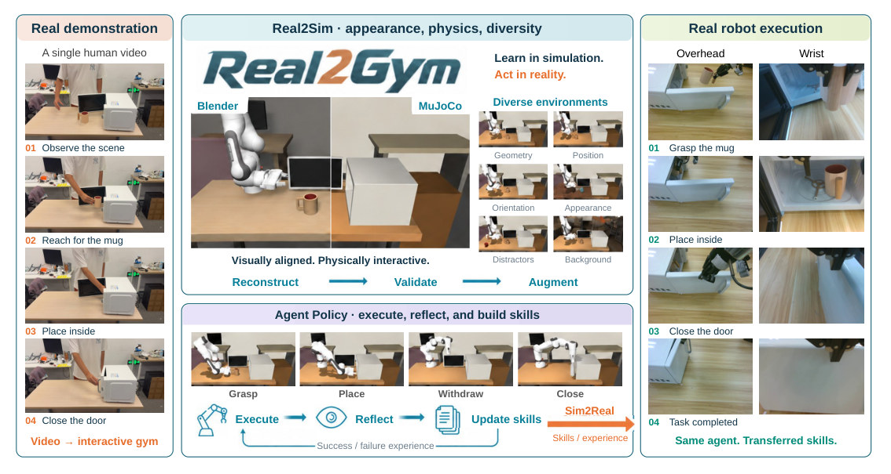
怎么读这张图
- 左 "Real demonstration"：一段人手视频，01 Observe the scene → 02 Reach for the mug → 03 Place inside → 04 Close the door。这是输入；我们的例子换成 DROID 机器人视频，入口一样。
- 中上 "Real2Sim · appearance, physics, diversity"：左半 Blender、右半 MuJoCo 是同一场景（"Visually aligned. Physically interactive."）；底部 Reconstruct → Validate → Augment 就是 Stage 1–3。
- 中上右 "Diverse environments"：Geometry、Position、Orientation、Appearance、Distractors、Background 六种变体，对应 Stage 3。
- 中下 "Agent Policy"：Grasp / Place / Withdraw / Close 四个 stage；Execute → Reflect → Update skills，靠 "Success / failure experience" 回环，对应 Stage 4。
- 右 "Real robot execution"：Overhead + Wrist 两路相机，真机按同样四步完成；橙色箭头 "Sim2Real · Skills / experience"，"Same agent. Transferred skills."
怎么看这段视频
- "Zero-shot on Franka" → "Fail" → "Second Test"：真机直接做 Place Plate on Shelf，盘子抓起来又掉回桌面，两次都失败（Fig. 6(a) 里两边都是 0%）。
- "Human Video" → "Simulation"：拍一段人手把盘子插进架子的第三人称视频，Real2Sim 建成 twin，Franka 出现在同一张桌子前。
- "First Play" → "Second Play" → "Third Play" → "Skill+1"：agent 在 twin 里三次尝试，第三次成功，抽出 skill（Fig. 6(b) 的 Iter. 1 fail、Iter. 2 fail、Iter. 3 success）。
- "Sim2Real" → "Success!"：带着 skill 回真机，盘子立进架子（真机 0% → 100%，见 E4）。
flowchart LR I["Input
3 路视频 + URDF"]:::example --> G["Gym 构建
对齐场景 + 6 变体"] G --> K["Agent + skills
换碗位置也成功"]
Level 2 · Stages
4 个 stage，外加一个处处都有的 verify-then-retry
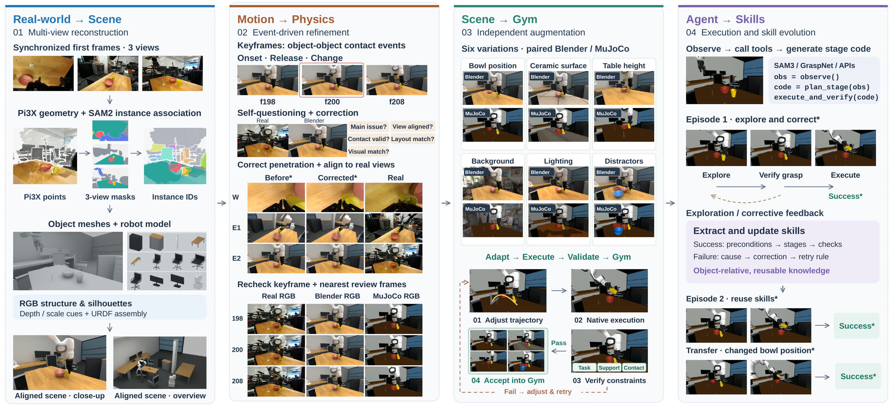
怎么读这张图
- 01 "Real-world → Scene"："Synchronized first frames · 3 views" → "Pi3X geometry + SAM2 instance association"（Pi3X points、3-view masks、Instance IDs）→ "Object meshes + robot model" → "Aligned scene · close-up / overview"。
- 02 "Motion → Physics"："Keyframes: object-object contact events, Onset · Release · Change" = f198、f200、f208；"Self-questioning + correction" 的 5 个问题；"Correct penetration + align to real views" 在 W、E1、E2 三个视角给 Before* / Corrected* / Real；底部 198/200/208 三行 Real RGB / Blender RGB / MuJoCo RGB。
- 03 "Scene → Gym"："Six variations · paired Blender / MuJoCo"：Bowl position、Ceramic surface、Table height、Background、Lighting、Distractors；下方 01 Adjust trajectory → 02 Native execution → 03 Verify constraints（Task、Support、Contact）→ 04 Accept into Gym，失败走虚线 "Fail → adjust & retry"。
- 04 "Agent → Skills"："SAM3 / GraspNet / APIs" 和
obs = observe(); code = plan_stage(obs); execute_and_verify(code)；Episode 1 explore and correct（Explore → Verify grasp → Execute → Success*）；"Extract and update skills"；Episode 2 reuse skills → Success*；"Transfer · changed bowl position" → Success*。
flowchart TD IN["Input
3 路视频 + Franka URDF"]:::example --> S1 S1["1 · Scene reconstruction
Pi3X + SAM2 → 对齐场景"] --> S2["2 · Action + physics
f198/f200/f208 自查修正"] S2 --> S3["3 · Augmentation
6 个变体进 Gym"] S3 --> S4["4 · Agent + skills
Ep.2 复用 → 换碗成功"]:::win S4 --> OUT["Output
gym 集合 G + skill 库 K"] click S1 href "#stage-1" click S2 href "#stage-2" click S3 href "#stage-3" click S4 href "#stage-4"
点击 stage 展开 Level 3 细节；每个 stage 都"检查 → 失败就局部修 → 再检查"，见 贯穿全程的 verify-then-retry。
Level 3 · Details
每个 stage 的细节
Stage 1 Scene Reconstruction and Alignment 首帧多视角 + URDF → 对齐的 Blender 场景（物体 mesh + 机器人）
- Why：LLM 直接搭的场景尺寸、相对布局、相机外参不准（§1、Fig. 3），后面一切物理都建立在它上面。
- 几何：从首帧开始；多视角用 Pi3X（π3 的实现），单视角用 MoGe-3。
- 尺度和坐标系：标定好的相机参数 + metric 参考 cue 锁定全局尺度和共同坐标系。
- 实例：SAM2 + 语义推理，分出 manipulated objects、支撑面、显著背景，跨视角保持同一 ID。
- 补全：每个实例一个完整 mesh；被挡住的面用 RGB 轮廓、可见结构和最多 10 个稀疏多视角帧补。
- 机器人：按 URDF / MJCF 导入，对齐 base pose、初始关节和相机挂载。
- 精修：迭代 reprojection 检查，联合调物体几何、pose、相机参数，同时守住支撑关系和运动学。
flowchart LR a["首帧 3 视角
W · E1 · E2"] --> b["Pi3X + SAM2
点云 + instance ID"] b --> c["mesh + URDF
reprojection 精修"]
Running example 在这一步
三路首帧 → Pi3X points、3-view masks、Instance IDs → 桌子、红碗、黄杯各一个 mesh，加上 Franka（"Object meshes + robot model"）→ "Aligned scene · close-up / overview"。深度来自 Pi3X 估计，不是 DROID 的立体深度（我的推断：论文只提 Pi3X / MoGe-3）。
Stage 2 Action Reconstruction and Physical Validation 对齐场景 + 记录的动作 → MuJoCo 里端到端跑通的 seed 环境
- Why：看着对齐还不够，尺寸和位置差几毫米就穿模、抓空（§1）。
- 关键帧：选接触、抓取、支撑、容纳关系发生拓扑变化的帧（Onset · Release · Change）。
- 动作来源：有记录就用记录的关节和夹爪状态（DROID）；人手视频把 hand–object 交互 retarget 到机器人。
- 自查：每个关键帧、每个视角查 5 项：primary discrepancy、camera alignment、relative placement、contact / penetration、appearance（图里问作 "Main issue? View aligned? Contact valid? Layout match? Visual match?"）。
- 修正：发现异常 → 检查相邻帧 → 局部修 → 再验证。
- 建 MuJoCo：articulated 机器人、碰撞几何、容器腔体、材料、actuators。
- 渐进标定：先调 approach 轨迹和接触朝向，再验夹爪闭合、抓持保持、支撑稳定、释放。
- 验收：从初始状态端到端执行；物理轨迹导回 Blender，逐帧比 Real / Blender / MuJoCo RGB。
flowchart TD k["关键帧
f198 · f200 · f208"] --> q["5 项自查
每帧 × 每视角"] q -->|异常| f["邻帧 + 局部修
修穿模、对齐视角"] f -->|再验| q q -->|通过| m["MuJoCo 渐进标定
approach → 闭合
→ 保持 → 释放"] m --> r["导回 Blender
Real / Blender / MuJoCo"]
Running example 在这一步
f198 / f200 / f208 三个关键帧（f200 被红框标出）；"Correct penetration + align to real views"：W、E1、E2 三个视角从 Before* 改到 Corrected*，贴近 Real；最后 198、200、208 三行 Real RGB / Blender RGB / MuJoCo RGB 对齐（Fig. 2 第二栏）。注意第一步就"adjusting approach trajectories"，所以验收的不是原样不动的回放（我的推断，和 r2s-lite、WorldMirror 的原动作回放不同）。seed 环境的 Real / Blender / MuJoCo 视频项目页没放，放的是增强后的变体，见 Stage 3。
Stage 3 Task-Conditioned Scene Augmentation 一个验过的 seed 环境 → 环境池 G（每个都在原生物理里验过）
- Why：agent 要攒能迁移的 skill，需要同一任务的多个变体，而且每个变体都必须真能完成。
- 因素：geometry、pose、support height、material、distractors、background、lighting；每个因素先单独扰动，看它对可行性的影响。
- 同步：几何改动同时改 visual mesh、collision mesh、支撑面和机器人安装。
- 动作适配：manipulation stage 按新的抓取区、目标位姿和间隙调整。
- 验收：原生物理执行，查 task completion、contact、support、Blender–MuJoCo 一致；失败回去改场景或动作，通过才进 G。
flowchart TD a["01 Adjust trajectory
碗移位 → 改路径"] --> b["02 Native execution
MuJoCo 原生物理"] b --> c["03 Verify constraints
Task · Support · Contact"] c -->|Pass| d["04 Accept into Gym
6 个变体"]:::win c -->|Fail| a
Running example 在这一步
碗场景 → 6 个变体：Bowl position、Ceramic surface、Table height、Background、Lighting、Distractors，每个都有一对 Blender / MuJoCo 画面（Fig. 2 第三栏；上面的视频是其中四个）；改碗位置的那个变体后面就是 Stage 4 的迁移测试。
Stage 4 Agent Execution and Skill Accumulation gym + 任务指令 → 执行结果 + 更新后的 skill 库 K
符号表（公式 1：ck = πθ(g, ok, Hk, Ke)）
| 符号 | 白话 | 例子里 |
|---|---|---|
| πθ | agent 的策略，就是一个大模型；θ 是它的权重，全程不更新 | GPT-6 Astra，medium effort |
| g | 任务指令 | Pour the contents of the cup into the bowl（项目页的写法） |
| ok | 第 k 次决策时看到的：相机画面、机器人本体状态、允许的执行反馈 | W / E1 / E2 画面 + 关节和夹爪 |
| Hk | 本 episode 里之前的对话和执行历史 | Episode 1 里前几轮代码和结果 |
| Ke | 这次选中、放进输入的 skill | Episode 2 选了 Episode 1 抽出的 skill |
| ck | 输出：一段 Python 程序，覆盖一个子任务，带进入条件、中间检查和可观测的完成条件 | "Verify grasp" 那一段代码 |
- Why：Direct Mode 每个动作问一次模型，调用多、token 多；而且每次从零开始，失败教训留不下来。
- 一段代码一个 stage：调 SAM3 分割、Contact-GraspNet 出抓取候选，做坐标变换和位姿偏移，再调
goto_pose()、open_gripper()、close_gripper()；程序里自己检查进度（如先合夹爪、再测抓持，再交回控制）。 - 执行器：在有界的执行段里跑（每段最多 600 control steps），返回新观测和反馈；每任务最多 50 次模型决策。
- 上下文：一个 episode 共用一个 context；新 episode 从空 context + 选中的 skill 开始。
- Extraction（episode 结束后单独一个进程）：每轮代码标 positive / negative / unknown；对比失败尝试和之后的修正；skill = 适用条件 + 步骤 + 效果检查 + object-relative motion rule（谁动、以哪个物体为锚、相对位姿、何时停）+ recovery 指引。
- 合并：新经验并入库，保留证据，修订被推翻的旧条目；用新的执行检验它有没有用。
- 真机：同一套感知和控制接口（App G：
from robo import reset, get_state, post_actions），不许读仿真内部状态。
flowchart TD o["observe()
3 路画面 + 关节"] --> p["plan_stage
写一段 stage 代码"] p --> e["execute_and_verify
Explore → Verify grasp"] e -->|下一个 stage| o e -->|episode 结束| x["Extraction
每轮标 + / − / ?
→ skill"]:::win x --> r["Episode 2
选 skill → 换碗成功"]
这 7 次决策各写了什么（页面原文，执行器返回为节选）
| # | 这一段代码打算做什么 | 控制步 | 执行器返回 |
|---|---|---|---|
| 1 | 限定掩码大小和图像位置，验证有限三维点；按不超过 6.5 cm 的段接近，每段检查 TCP 和关节误差 | 0 | SAM3 找到黄块（score 0.91，世界坐标 [0.534, 0.160, −0.012]），但代码自己的断言 "接近距离过大" 触发，机器人没动 |
| 2 | 保留当前几何，先推进最多 24 cm，分成不超过 7 cm 的路段并逐段验证 | 117 | 每段 joint_error_rad ≈ 0.004；到达中间点，剩余距离 0.194 m |
| 3 | 完成预抓取接近，用腕相机重定位黄块并估计桌面高度 | 89 | 腕相机确认黄块，支撑面 z = −0.039，TCP 到 [0.534, 0.159, 0.107] |
| 4 | 复核中心，夹持点放在顶面下 1.4 cm 且高于桌面，闭合后抬升并检测黄块是否跟着动 | 169 | 闭合状态 0.447，黄块抬升 0.063 m，跟随验证 True |
| 5 | 从杯沿深度估计杯心，先竖直抬高，再分段平移到杯上方，保持闭合 | 166 | 杯口 [0.549, −0.108]，半径约 0.042；杯上方 TCP 高 0.147，夹爪开度 0.444 |
| 6 | 拟合杯沿圆，补偿黄块相对 TCP 的偏移；到杯沿上方 4.5 cm 释放，再上撤 7 cm 拍验证图 | 160 | 杯心 [0.549, −0.109] 半径 0.035；释放横向误差 6e-5 m；已松开并上撤 |
| 7 | 视觉验证完成，停止运动 | 0 | （stop） |
第 2 段的代码（页面原文）：一段 stage 代码里自己分段、自己核对，这就是"一次回复协调多个动作和检查"的意思。
obs=get_observation()
cur=np.array(obs['robot_cartesian_pos'][:3])
mid=pre.copy(); mid[2]=max(pre[2],cur[2]-0.13)
delta=mid-cur
if np.linalg.norm(delta)>0.24:
mid=cur+delta*0.24/np.linalg.norm(delta)
n=int(np.ceil(np.linalg.norm(mid-cur)/0.07))
for i in range(1,n+1):
obs=checked_move(cur+(mid-cur)*i/n,q_down)
print('接近中间点',obs['robot_cartesian_pos'][:3], '剩余距离',np.linalg.norm(pre-np.array(obs['robot_cartesian_pos'][:3])))
项目页 trace 里的函数名（get_observation、segment_sam3_text_prompt、mask_to_world_points、checked_move）和论文正文的 goto_pose() / App G 的 get_state()、post_actions() 不是一套，是仿真端 agent 的代码层。Table 4 的 D1（Ours：8 responses、0.21M tokens、3.91 min）和这条 trace（7 次、167,757 tokens、207 s）也不是同一次运行。
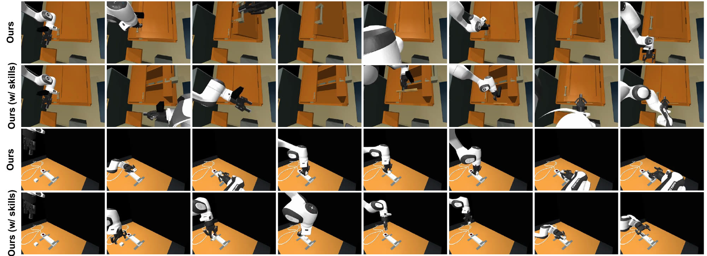
- "Ours" 行：第一次执行，agent 在柜门和 adapter 上来回探索（项目页说明：柜子那组是反复开门的尝试）。
- "Ours (w/ skills)" 行：第二次执行带上第一次抽出的 skill，柜子那组走完"放进去、关门"的完整序列，adapter 那组对准的重复次数更少；帧是挑出来的，不是等间隔。
Running example 在这一步
Episode 1：Explore → Verify grasp → Execute → Success*，中间有 "Exploration / corrective feedback"；抽出 skill："Success: preconditions → stages → checks"，"Failure: cause → correction → retry rule"，都是 object-relative 的。Episode 2 带 skill → Success*；碗换了位置（Stage 3 的变体）也 Success*，因为 motion rule 以碗的当前位姿为锚。
贯穿全程 Verify-then-retry，全部由同一个 GPT-6 Astra 驱动 每个 stage 的产物 → 检查 → 失败就局部修 → 再检查
- Stage 1：reprojection 检查，联合修几何、pose、相机。
- Stage 2：5 项自查 → 邻帧 → 局部修 → 再验；物理按 approach → 闭合 → 保持 → 支撑 → 释放 逐项标定。
- Stage 3：Verify constraints 失败 → "Fail → adjust & retry"。
- Stage 4：程序里的中间检查（上面 D01 的 7 段里每段都有断言和核对）；episode 后 extraction 把失败变成 retry rule。
- 同一个模型：建场景、执行 policy、抽 skill 全用 GPT-6 Astra（medium effort），Real2Sim 的评委也是 GPT-6 Astra（high effort）。
flowchart LR c["检查
5 项 / 约束 / 程序内"] -->|失败| f["定位 + 局部修
邻帧、轨迹、场景"] f -->|再检查| c c -->|通过| n["进入下一步"]
Running example 在这一步
f200 的穿模在 Stage 2 被抓住并修好；碗挪位的变体若 Native execution 不过，就回到 01 Adjust trajectory；Episode 1 里抓取失败的那一轮被标成 negative，变成 Episode 2 的 retry rule。
Recap：例子覆盖了论文的哪些 idea
| 论文里的 idea | 例子里在哪体现 |
|---|---|
| 多视角重建 + 实例关联（Pi3X、SAM2） | Stage 1：W / E1 / E2 首帧 → 点云、masks、Instance IDs |
| 补全 mesh + 导入机器人 + reprojection 精修 | Stage 1：桌、红碗、黄杯的 mesh + Franka → Aligned scene |
| 事件关键帧 + 5 项自查 + 局部修正 | Stage 2：f198 / f200 / f208，W、E1、E2 的 Before* → Corrected* |
| MuJoCo 渐进物理标定 + 导回 Blender 三栏对比 | Stage 2：198 / 200 / 208 的 Real / Blender / MuJoCo RGB |
| 任务条件增强 + 原生物理验收 | Stage 3：6 个变体，Adjust → Execute → Verify → Accept；项目页的 Bowl position 变体视频 |
| stage 级代码策略（公式 1） | Stage 4：observe → plan_stage → execute_and_verify；项目页 D01 的 7 段代码 |
| skill extraction 与复用（权重不动） | Stage 4：Episode 1 抽 skill → Episode 2 成功 |
| object-relative skill 迁移 | Stage 4：Transfer · changed bowl position → Success* |
| Real2Sim2Real | 例子延伸到真机：Place Plate on Shelf 拍一段人手视频，走同一流程，真机 0% → 100%（E4，视频在 Big picture） |
Results
建出的 gym 更像、更能跑；在里面攒 skill 的 agent 成功率更高、token 更少，并能救回一个真机失败任务
顺序同论文：E1 重建质量 → E2 仿真里 agent 的成功率和成本 → E3 真机 zero-shot → E4 Real2Sim2Real → E5 模型和 effort 消融（App D）。E1 比的是 LLM 打分，E2 同时比成功率和 token、时间，E3–E4 比真机成功率。
E1建出的场景比直接让 LLM 搭的更像、更能执行吗？§4.2 · Table 1 · Fig. 3 · Table 3
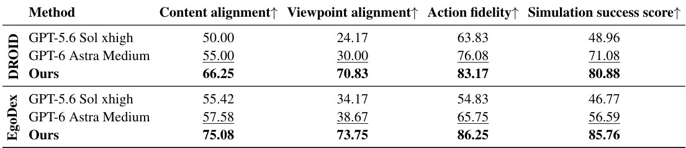
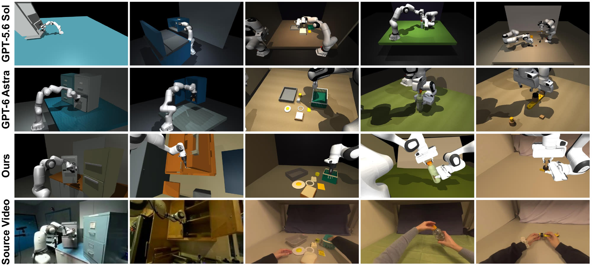
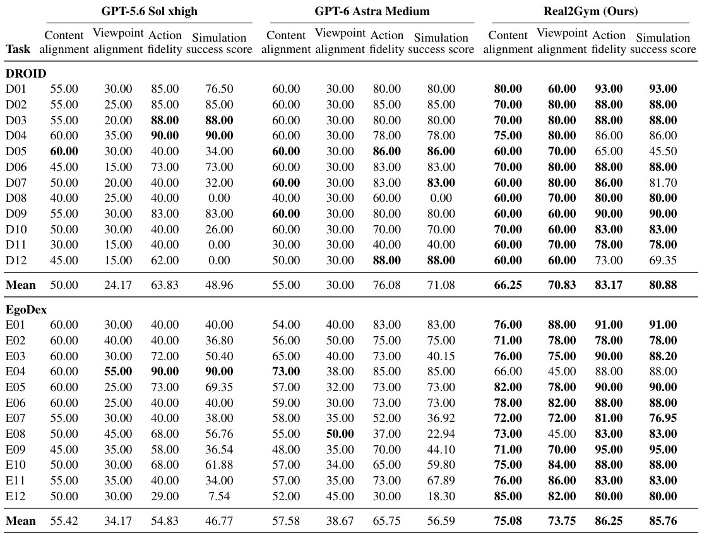
- 说明什么
- 四项分数全面更高。DROID：Viewpoint 70.83 vs Astra 30.00（+40.83），Sim success 80.88 vs 71.08 / Sol 48.96；EgoDex：Sim success 85.76 vs 56.59（相对 +51.5%），Content 75.08 vs 57.58。逐任务：ours 最低是 D05 45.50、D12 69.35；Astra 的 D08 sim 分为 0，Sol 的 D08、D11、D12 为 0。
- 在故事里
- 证明 Stage 1–2 让场景"既对齐又可执行"，这是 agent 在 gym 里练习的前提。
- 指标
- GPT-6 Astra（high effort）按 App E rubric 打 0–100：Content（MuJoCo 50 + Blender 50）；Viewpoint（锚点 100 / 80 / 60 / 30 / 0，不许重拟相机）；Action fidelity（goals 10、order 20、contact 25、paths 25、timing 10、initial/final 10，因果不等价封顶 40）；Sim success = action fidelity × task completion / 100，其中 completion = steps 40 + final state 40 + physical execution 20，确认物理失败记 0，强加的物体轨迹或隐藏附着不算抓住。
- 怎么评测
- 12 个 DROID + 12 个 EgoDex 场景，各 4 easy / 4 medium / 4 hard；每个场景一次（表里没有方差）。
- Baseline：GPT-6 Astra（medium）和 GPT-5.6 Sol（xhigh），按 App F 的 prompt 直接建 Blender + MuJoCo 并复现动作；DROID prompt 给外部视频、wrist 视频和轨迹文件，Franka Panda + Robotiq 2F-85 URDF。
- 评委和建场景的是同一模型家族（GPT-6 Astra），没有人工或物理实测的成功率（我的推断：可能偏向 Astra 风格的输出）。
- Astra 的 DROID Viewpoint 12 个任务全是 30.00，正是 rubric 的"30"锚点（"only part of the task region … corresponds"）：分数是离散锚点，不是连续测量（我的推断）。
- 没有和任何外部 Real2Sim 方法比较，Agentic Real2Sim 只在 §2 引用。
E2在这些 gym 里，stage 代码 agent + skill 比 Direct Mode 成功率更高、更省吗？§4.2 · Table 2 · Fig. 4 · Table 4
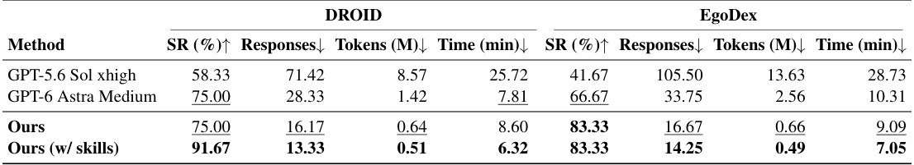
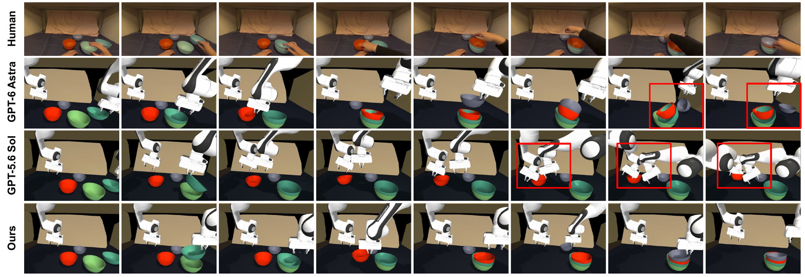
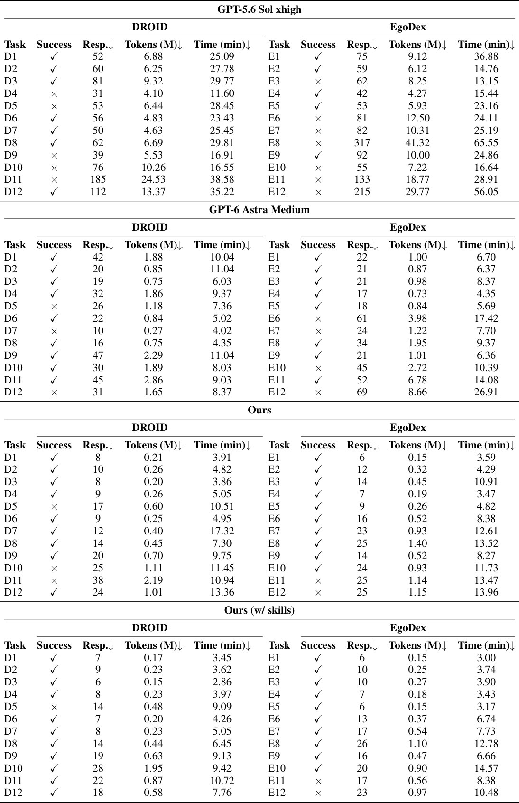
- 说明什么
- 成功率更高，token 和时间更少。两数据集平均：w/ skills 87.5% vs Astra Direct 70.8%，token 少 74.9%；不带 skill 79.2%，token 少 67.3%。DROID：91.67%、0.51M tokens、6.32 min vs Astra 75.00%、1.42M、7.81 min，Sol 58.33%、8.57M、25.72 min。EgoDex：带不带 skill 都是 83.33%，tokens 0.49M / 0.66M vs Astra 66.67%、2.56M。DROID 不带 skill 时 ours 8.60 min，反而比 Astra 的 7.81 min 慢。
- 在故事里
- 撑起 Stage 4 的两个主张：stage 级代码少调用（16.17 vs 28.33 responses），skill 复用再提一档。
- 指标
- SR：预定义完成条件 + 人工检查；Responses：模型回复数；Tokens：input + output，cached input 只算一次；Time：执行的 wall-clock（含感知、推理、控制），不含建场景和 skill extraction。
- 怎么评测
- 24 个 MuJoCo 环境全是 Real2Gym 自己建的，baseline 也在这些 gym 里跑。
- 每任务一次（91.67 = 11/12，所以 n = 12、单次，我的推断）；预算 50 次决策、每段 600 control steps；禁止读仿真特权信息。
- Direct Mode：指令 + 实时多视角 + URDF + 感知和 arm API，每一步选一个动作。
- "w/ skills" 是同一任务的第二次执行，用第一次抽出的 skill：测的是同任务复用，不是没见过的新任务。
- 带 skill 后新解 D10、D11；D5 两次都失败（它的 Real2Sim 分也最低，45.50）；EgoDex 的 E11、E12 两次都失败。
E3同一个 agent 接口搬到真机，zero-shot 能用吗？§4.3 · Fig. 6(a)
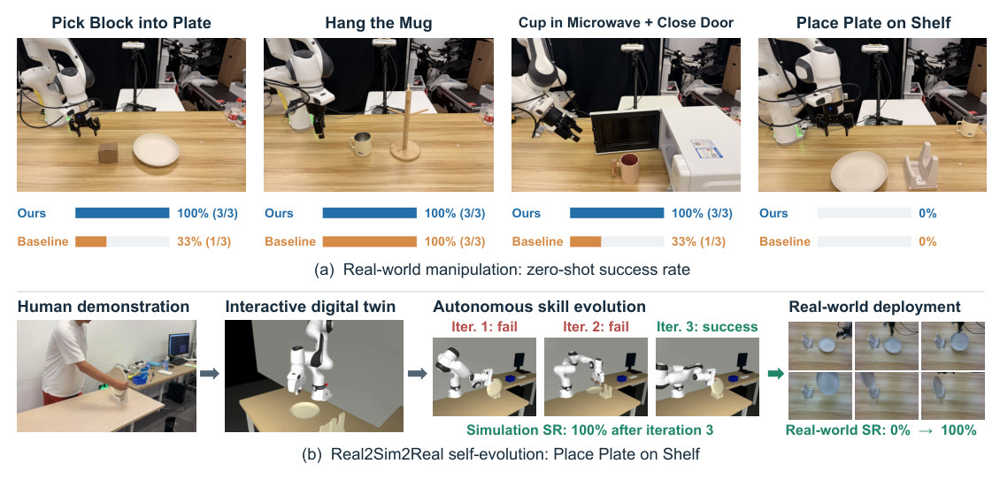
- 说明什么
- 4 个任务里 3 个 100%，baseline 只有 1 个。Pick Block into Plate 100%（3/3）vs 33%（1/3）：baseline 横向抓，block 比夹爪横向开口略宽，卡住；Hang the Mug 都是 100%，总时间 1302.7 s vs 1522.7 s；Cup in Microwave + Close Door 100% vs 33%：baseline 把杯子放在门槛上，或回撤时撞门框触发关节安全停；Place Plate on Shelf 两边都是 0%。
- 在故事里
- 说明 stage 代码 + 同一感知控制接口在真机上仍然有效，为 E4 的"仿真里练、真机上用"铺路。
- 指标
- 任务成功率，每任务 3 次；论文没给逐任务的成功判定细则。
- 怎么评测
- Franka Research 3 + Robotiq 2F-85，两台 RealSense RGB-D（wrist eye-in-hand + 静态外部）。
- Baseline：Direct Mode（GPT-6 Astra medium）。
- 每任务 3 次，差距只有 1–2 次试验（我的推断：统计上很弱）。
E4真机失败的任务，能靠"拍视频 → 建 twin → 仿真里练"救回来吗？§4.3 · Fig. 6(b)
| 步骤（Fig. 6(b)） | 结果 |
|---|---|
| Human demonstration：未标定的第三人称人手视频 | 输入 |
| Interactive digital twin：走 Real2Sim pipeline | 一个 twin |
| Autonomous skill evolution | Iter. 1 fail，Iter. 2 fail，Iter. 3 success；Simulation SR 100% |
| Real-world deployment | Real-world SR 0% → 100% |
按 §4.3 和 Fig. 6(b) 的文字整理成表；图见 E3 的 Fig. 6 下半。
- 说明什么
- Place Plate on Shelf 真机从 0% 到 100%。zero-shot 失败的原因：抓取要精确控深度以免撞桌，接近朝向要把弯的盘沿对上平行夹爪，放入要塞进窄的架框。
- 在故事里
- 闭合 Real2Sim2Real 回路，是整篇的终点主张：失败驱动的 skill 获取。
- 指标
- 仿真和真机成功率；真机部署的试验次数论文没写（图里有 6 张部署照片）。
- 怎么评测
- 单任务、单个 twin、一个案例。
- 没有 baseline 走同样的 Real2Sim2Real 流程做对照。
E5换模型或 reasoning effort，Real2Sim 还能建出可执行的长程任务吗？App D · Fig. 8
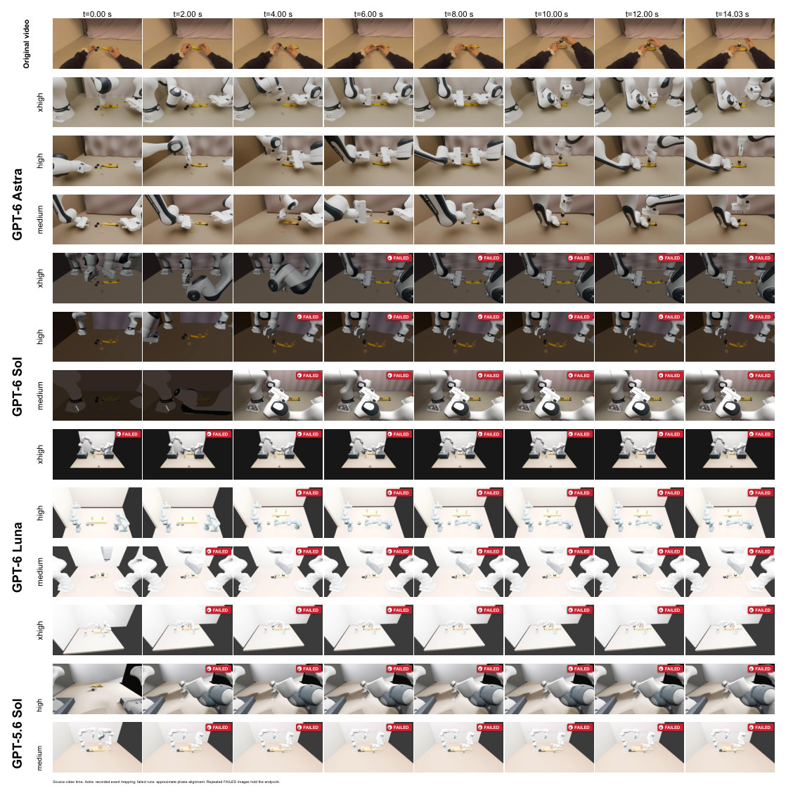
- 说明什么
- 只有 GPT-6 Astra 三档 effort 都通过。GPT-6 Sol 在 high、medium 时在抓取或装第一个轮子前失败，xhigh 到第二个轮子但没松开，都没拧上螺母；GPT-6 Luna 和 GPT-5.6 Sol 的几何、物体关系或视角偏差更大，在初始化、早期抓取或局部检查时就失败。
- 在故事里
- 说明"看着像"不等于"物理上能跑完长程任务"，也是选 GPT-6 Astra 当默认模型的依据。
- 指标
- 是否通过 full-task simulation criteria（App E 的仿真判定）。
- 怎么评测
- 一个 EgoDex 双臂装配任务：两个轮子和一个方螺母装到螺栓上、拧紧、插入底座。
- 4 个模型 × 3 档 effort = 12 个配置，每个一次；只有定性图，没有数字表。
Limits
局限和开放问题
- 作者：wrist 和静态相机不对齐时，Pi3X 点云会有 ghosting、分层面，几何和纹理有残差。
- 作者：stage 级代码省调用，但缺细粒度的局部反应，约束很紧的操作吃亏。
- 作者：真机只做了 Franka 平行夹爪。
- 我的推断：Real2Sim 的评委是 GPT-6 Astra，和建场景的模型同源；没有人工标注或物理实测的 Real2Sim 成功率。
- 我的推断：n 很小，每个数据集 12 个任务、每任务一次；真机每任务 3 次。
- 我的推断：允许调整轨迹（"01 Adjust trajectory"），所以 sim success 不是原动作不变回放的成功率；深度来自 Pi3X / MoGe-3 估计，没用 DROID 的立体深度。
- 我的观察：项目页 Agent execution 只放了 24 个任务里的 18 个，缺的 D05、D10、D11、E10、E11、E12 正好是 Table 4 里失败或两次才解决的那几个。
- 代码：R2G_Agent 只发布 "C0 continuous stage-code execution path"，"does not load previous-task procedures or build a persistent experience library"，所以 "w/ skills" 一行可能无法用发布代码复现。
For Agent-centric real-to-sim
对我们有什么用
- 当 r2s-lite 的 baseline：它也吃 DROID，但报的是 LLM rubric 的 sim 分（80.88）且允许改轨迹；放进我们的 E0 评测（Isaac、原动作回放、
verify.judge.decides: rules）要写一个 MJCF →sim/scene.json的 adapter，并把"改过轨迹"的版本单独报。 - 复现清单：Real2Gym + R2G_Agent 两个 repo；GPT-6 Astra（走 proxy，花费先问）；Blender 4.5.3 LTS、MuJoCo 3.3.7、SAM2 / SAM3 0.1.0、Pi3X / MoGe-3、Contact-GraspNet（PyTorch）；Franka Panda + Robotiq 2F-85 URDF。项目页的 data.js 带每个 benchmark 场景的 Real / Blender / MuJoCo 视频和 glb 模型，可以直接当对照数据。
- 可借鉴：关键帧 5 项自查和 Real / Blender / MuJoCo 三栏逐帧对比，对应我们的 X-ray review 和 sim X-ray；他们报 token 和 wall-clock，我们也该报（再加 GPU 小时）；object-relative motion rule 适合 WorldClaw 和 harness 的 skill 库。